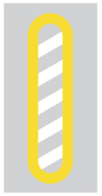

左右の見通しの悪い交差点を通行するときは徐行する。
YES
P.84
駐車禁止の場所で、人を待つため５分間運転席に座り車を停止させた。
NO
P.246
バスの停留所（運行時間中に限かぎる）の標示板から１０メートル以内の場所に車を止めると駐停車違反になる。
YES
P.248
駐車禁止の標識のある場所で、人を待つため５分間運転席に座り車を停止させた。
NO
P.246
運転者は、座席でないところに人を乗せたり、荷台や座席でないところに荷物を積つむことはできない。
YES
P.260
前の車が原動機付自転車や軽車両を追い越そうとしているときは、その車を追い越こすことができる。
YES
「自動車を車が追い越す」のが、二重追い越しの定義である。
P.119
普通自動車対応免許を受けている人で、免許証に特定後写鏡（ワイドミラー）使用の条件をつけられている人が普通自動車を運転するときは、その車の前と後の定められた位置に身体障害者標識をつけなければらならない。
NO
つけなくてはならないのは「聴覚障害者標識」である。
こう配の急な上り坂や下り坂は、追い越し禁止場所である。
NO
「こう配の急な上り坂」は追い越し可能。ダメなのは「上り坂の頂上付近」である。
P.120
中型免許の受験資格は、２０歳以上で、準中型免許、普通免許、大型特殊免許のいずれかを受けていた期間が通算して２年以上である。
YES
P.132
ブレーキペダルを踏み込んで、フワフワして柔らかい感のときは、ブレーキ液の漏れ、空気の混入のおそれがある。
YES
P.238
中型免許で大型特殊自動車を運転できる。
NO
「大型特殊免許」が必要。
P.131
 図の標識は、「高速自動車国道または自動車専用道路」であることを表している。
図の標識は、「高速自動車国道または自動車専用道路」であることを表している。
YES
P.36
昼間でも、トンネルの中や濃い霧の中などで１００メートル（高速道路では２００メートル）先が見えないような場所を通行するときは、前照灯をつけなければならない。
NO
一般道では１００メートルではなく５０メートル先が、高速道路では２００メートル先が、見えないような場合は昼間でも前照灯をつけなければなりません。
けん引するための装置と構造のある自動車で、けん引されるための装置と構造のある車両総重量７５０キログラム以下の車をけん引して運転するときは、けん引免許を受けていなければならない。
NO
総重量が７５０キログラムを超える車をけん引するときは、けん引免許が必要です。この場合は必要ありません。
P.134
大型自動二輪車と普通自動二輪車（総排気量２５０ｃｃ以下のものを除く）は、２年ごとに自動車の検査（車検）を受けなければならない。
NO
初回に限り３年になる。
事業用の大型自動二輪車と普通自動二輪車の定期点検は、３ヶ月ごとに行わなければならない。
NO
１２ヶ月（１年）ごとに行う
ＡＴ二輪車は、小回りが難しいので、安全確認を確実に行い、慎重に運転することが大切である。
YES
ホイールベース（前後輪の間隔）が長いため、ＭＴ二輪車に比べて小回がききにくいです。
P.189
図の補助標識は、本標識が示す路線・施設・場所がある方向を示している。
YES
「方向」補助標識です。
P.43
軌道敷とは道路上において「？」が通行するのに必要な部分のことである。
路面電車
大型免許を受けていれば、車の総重量が７５０キログラムを超える車をけん引できる。
NO
車の総重量が７５０ｋｇを超える車をけん引するときは、けん引免許が必要です。
P.134
バッテリーを点検するときは、液量が十分あるか、ターミナルの汚れやゆるみがないかも確認する。
YES
バッテリー液量やターミナル（バッテリー上部に付いてる蓋のような突起物）の汚れなども点検します。
P.231
乗客の乗り降りのため停留所に停止している路面電車に追いついたとき、安全地帯がある場合は徐行して通行できる。
YES
安全地帯がある場合には、乗り降りする人がいてもいなくても徐行して通行できます。また、安全地帯がなくても、乗り降りする人がいない場合で、路面電車との間に１．５メートル以上の間隔がとれるときも徐行して通行できます。
P.92
道路の左側部分の幅が６メートル以上ある道路では、道路の右側部分にはみ出して追い越しをすることはできない。
YES
６メートル以上ある道路では、道路の右側部分にはみ出して追い越しすることはできません。
P.121
路面が雨にぬれ、タイヤがすり減っている場合の停止距離は、乾燥した路面でタイヤの状態がよい場合に比くらべて、２倍程度にのびることがある。
YES
P.80
大型免許の受験資格は、２１歳以上で、中型免許、準中型免許、普通免許か大型特殊免許のいずれかを受けていた期間が通算して３年以上である。
YES
大型免許の受験資格は、２１歳以上で、中型免許、準中型免許、普通免許か大型特殊免許のいずれかを受けていた機関が通算して３年以上です。
P.132
普通ふつう自動車じどうしゃ対応たいおう免許めんきょを受うけている７０歳以上さいいじょうの人ひとが普通ふつう自動車じどうしゃを運転うんてんするときは、その車くるまの前後ぜんごに高齢こうれい運転者うんてんしゃ標識ひょうしきをつけるようにする。
YES
７０歳以上の人の高齢運転者標識の表示は、運転者の努力義務（任意）となります。
P.98
 図の標識は、バスの停留所であることを表している。
図の標識は、バスの停留所であることを表している。
NO
「停止可」の標識で、車は停車することができることを表しています。
P.250
二輪車を押して歩いているときは、歩行者として扱われるが、エンジンがかかっているものや側車付のものは除のぞかれる。
YES
P.54
家の新築工事のため、材木を道路上に積んでおいた。
NO
P.13
行政上の責任とは、事故を起こした人が公安委員会から、「？」の「？」や「？」などの処分を受けることです。
「運転免許」「取り消し」「停止」
P.225
交通事故を起こすと、運転者はその内容により刑事上、民事上、行政上の責任を負うことになる。
YES
P.225
規制標識とは、特定の交通方法を禁止したり、特定の方法に従って通行するよう指定したりするものである。
YES
P.34
故障車の後輪をクレーンなどでつり上あげてけん引するときは、前輪が故障車の中心線に平行になるように、ハンドルを固定する。
YES
ここでいう前輪とハンドルとは、故障車のものであり、ハンドルの固定とは、例えばロープなどで縛り付けて固定し、前輪を真っ直ぐに保つようにする、ということである。
P.264
大型自動二輪車や普通自動二輪車で二人乗りをする場合には、安定性に優れ、後部座席にゆとりのある車種を選ぶとよい。
YES
P.193
一方通行の道路では、道路の左右どちら側に駐車してもよい。
NO
常に左側端に沿う必要がある。
P.251
標識は大きく２つの種類がある。なにとなにか。
本標識と補助標識
本標識は「きしけあ」の４種類に細分化できる
表示はどんな種類があるか
規制表示と指示表示
本標識の「きしけあ」の「きし」に対応する
霧のとき前照灯を上向きにすると霧に乱反射して、見えにくくなるので、前照灯は下向にして走行したほうがよい。
YES
P.206
車は駐車した場合、車の右側の道路上に３．５メートル以上の余地がなくなる場所では、駐車することはできない。
YES
「３．５メートル＝乗用車約２台分」と覚えておくこと
P.250
片側が転落のおそれのある谷になっている狭い道で行き違うときは、山側を通る車があらかじめ安全な場所に停止して道をゆずる。
NO
谷側（崖側）を通る車が道を譲る。
P.127
走行中にエンジンがオーバーヒートしたときは、すぐにエンジンを止めて冷却水を補給するとよい。
NO
エンジンは止めず、低速回転させてエンジンを冷却させる。
P.210
遠心力は、速度の２乗に比例して大きくなり、カーブの半径が小さいほど大きくなる。
YES
P.163
夜間、対向車のライトがまぶしいときは、視点をやや右に移すとよい。
NO
右に移すと、対向車のライトを直接目に受けてしまうことがあるので、左前方に移します。
P.199
高速自動車国道で道路の構造上往復の方向別に分離されていない本線車道での最高速度は、一般道路と同じである。
YES
P.305
車を運転中、大規模な地震が発生したとき、やむを得ず車を道路上に置いて避難するときは、道路の左側に寄せてエンジンキーを抜きとり、窓を閉め、ドアをロックしておくとよい。
NO
左側に寄せて駐車し、エンジンを止め、エンジンキーはつけたまま「ドアはロックせず」、火炎が車内に入らないよう車の「窓を閉めて」非難します。
P.214
自動車の前面ガラスに貼られた検査標章の数字は、次回の検査の時期を示すものである。
YES
「４年１月１日」という風に書かれている。
P.273
車両通行帯のない道路では、普通自動車は道路の左側部分の中央寄りを通行しなければならない。
NO
自動車や原動機自転車は道路の左側に寄って通行する。キープレフトともいう。
P.57
 図の標識のあるところでは、普通自動車が原動機付自転車を追い越すことも禁止されている。
図の標識のあるところでは、普通自動車が原動機付自転車を追い越すことも禁止されている。
YES
原付を追い越すのも禁止。道路の右側部分にはみ出さなくても追い越し禁止。
P.121
オートマチック車で追い越しなどをするときは、アクセルペダルを強く踏み込むと、自動的にギアが切り替わり、急加速することができる。
YES
アクセルペダルを一気にいっぱいまで踏み込むと、急加速をします。これを「キックダウン」といい、追い越しや高速道路本線に侵入するときなどに使います。
P.89
踏切内で故障した場合、発炎筒がなかったり、使い切ってしまったときは、煙の出やすい物を付近で燃やすなどして合図をする。
YES
P.74
大型自動車・中型自動車・準中型自動車・普通自動車や大型特殊自動車の荷物を積む高さ制限は、地上から３．８メートルである。
YES
３．８メートル以下である。
P.261
高速道路では、自動車は路側帯を通行できないが、大型自動二輪車や普通自動二輪車は除かれる。
NO
路側帯や路肩を通行してはいけない。ただし、故障時などで車を止めるときには入れる。
P.307, P.310
車検とは、自動車検査、つまり自動車検査登録制度の略称である。
YES
自家用の普通乗用自動車の自動車検査は、１年ごとに行なわなければならない。
NO
自家用普通乗用自動車の車検の時期は、２年ごとです。ただし、新車登録時は３年です。
P.273
図の表示は、「立入り禁止部分」を表している。
YES
表示内に入ることはできない。また「安全地帯」ではない。
P.59
本線車道とは、高速自動車国道の通常高速走行する部分で加速車線も含まれる。
NO
本線車道とは、通常高速走行する部分であり、加速射線・減速車線・登坂車線・路側帯・路肩を除いた部分をいう。
P.305
交差点以外の横断歩道、自転車横断帯、踏切もないところで警察官が交通整理をしているときの停止位置は、その警察官の５メートル手前である。
NO
１メートル手前で停止する。ただし、停止線がある場合 (交差点などで) は、その直前で停止する。
P.29
火災報知機から１メートル以内の場所は、駐停車禁止である。
NO
駐車禁止であり、停車は可能である。
P.249
タクシーを回送する目的で運転するときは、第一種普通免許で運転することができる。
YES
回送（旅客運送を目的としない運転）するときは、第一種普通免許で運転することができます。
P.130
路線バス等優先通行帯を通行中、通学通園バスが近づいてきたときは、進路をゆずらなくてもよい。
NO
「 路線バス等」なので、通学通園バスが近づいてきた場合でも、すみやかに出ないといけない
P.116
踏切とその前後３０メートル以内の場所は、追い越し禁止である。
NO
踏切と「その前後」ではなく、その手前から３０メートル以内の場所が、追い越し禁止である。
P.120
 図の標示がある歩道は、普通自転車が通行できる歩道であることを示している。
図の標示がある歩道は、普通自転車が通行できる歩道であることを示している。
YES
「普通自転車の歩道通行部分」の表示である。普通自転車が歩道を通行できることと、通行しなければならない部分を示している。
P.48
高速自動車国道での最高速度は、大型特殊自動車やけん引いん自動車は、時速１００キロメートルである。
NO
時速８０キロメートルです。
車両総重量１１０００キログラム以上の自動車は、大型自動車である。
YES
つぎの条件のいずれかに該当するもの
- 車両総重量：１１，０００ｋｇ以上
- 最大積載量：６，５００ｋｇ以上
- 乗車定員：３０人以上
P.133
フェード現象とは、雨の日、高速走行中にブレーキやハンドルが効かなくなる現象のことである。
NO
フェード現象とは、ブレーキ装置が過熱して、摩擦力が急激に低下し、ブレーキが効かなくなる現象です。問題文の現象はハイドロプレーニング現象です。
総排気量６６０ｃｃ以下の普通貨物自動車の積み荷の高の制限は、地上から２．５メートルである。
YES
安全地帯の左側とその前後１０メートル以内の場所は、駐車禁止であるが停車ならできる。
NO
安全地帯の左側とその前後１０メートル以内の場所は、駐停車禁止場所なので、停車することもできません。
交差点とその手前から３０メートル以内の場所では、追い越しは禁止されているが、追い抜きは禁止されていない。
YES
追い越しだけではなく追い抜きも禁止されているのは、横断歩道、自転車横断帯とその手前から３０メートル以内の場所です。
赤色の灯火の点滅信号では、車や路面電車は、他の交通に注意し、徐行して進すすむことができる。
NO
- 車や路面電車は、停止位置で一時停止し、安全確認をした後に進むことができる。
- 歩行者は、他の交通に注意し、進むことができる。（黄色の点滅信号と同じ）
高速道路では、総排気量１２５ｃｃの普通自動二輪車は通行できる。
NO
１２５ｃｃを「超える」普通自動二輪車でなければ通行できない。
雨の降り始めは、舗装道路の表面の土ぼこリがオイル状になり、スリップしやすくなるので特に注意する必要がある。
YES
交差点の端から５メートル以内の場所で、人の乗り降りのため車を停止させた。
NO
交差点とその端から５メートル以内の場所は、駐停車禁止です。
二輪車で悪路を走行するときは、バランスをくずすことがあるので重心の移動がスムースに行えるように中腰にするとよい。
YES
多分「中腰」というのは、シートから少しお尻を浮かせて、立ち気味に「屁っこき体勢気味」になる感じだと思われ。
図の標識のある道路を、乗車定員１１人のマイクロバスで通行した。
NO
「大型乗用自動車等通行止め」の標識で、次の条件に当てはまる場合、「大型乗用自動車や特定中型自動車」と見なされ、通行できない。
- 車両総重量：８，０００ｋｇ以上
- 最大積載量：５，０００ｋｇ以上
- 乗車定員１１人以上の中型乗用自動車
二輪車の正しい乗車姿勢は、手首を下げて、ハンドルを前に押すような気持ちでグリップを軽く持つ。
YES
レンタカーを除く大型自動二輪車の定期点検は、１年ごとに受け必要な整備をしなければならない。
YES
ここでいう「定期点検」は「整備」のことで、いわゆる「車検（自動車検査）」とは別に定められた決まりである。他に「日常点検」というのもある。
P.274
中型免許の受験資格は、２１歳以上で、準中型免許、普通免許か大型特殊免許を受けていた期間が通算して３年以上である。
NO
中型免許の受験資格は次の通り。
- 指定免許（準中型、普通、大型特殊）のいずれかを取得している
- 指定免許の取得から経過した期間が通算して２年以上である（必然的に２０歳以上になる）
- ２０歳以上である
大型免許の受験資格は次の通り。
- 指定免許（中型、準中型、普通、大型特殊）のいずれかを取得している
- 指定免許の取得から経過した期間が通算して３年以上である（必然的に２１歳以上になる）
- ２１歳以上である
P.132
普通自動車で、故障車などをけん引いんするときは２台までけん引することができるが、大型自動車や大型特殊自動車で、故障車などをけん引するときは、３台までけん引できる。
NO
大型自動車・中型自動車・準中型自動車・普通自動車・大型特殊自動車でけん引する場合、２台まで。
大型自動二輪車・普通自動二輪車・小型特殊自動車でけん引する場合、１台まで。
他の車をロープでけん引している自動車は、高速自動車国道を通行できない。
YES
高速自動車国道では、法定最低速度が５０ｋｍである。一方、他の車をけん引する場合の法定最高速度は４０ｋｍである。この速度制限のジレンマにより通行できない。
ファンベルトの張り具合は、ベルトの中央部を手で押し、ベルトが少したわむ程度であるかを点検する。
YES
ファンベルトとは、エンジンのクランクシャフトの回転から動力をとり、車を動かすのに必要なエンジンの機構（オルタネーター、ウォーターポンプ、エアコンのコンプレッサーなど）を駆動させるためのベルトのことです。
“ファン”ベルトと呼ばれているのは、以前はこのベルトでラジエーターの冷却ファンを動かしていたからです（現在のエンジンは電動ファンが主流のため、ファンベルトでファンを回している車はほとんどありません）。
もし、ファンベルトが切れると、発電の役割を果たすオルタネーターが機能せず、バッテリーが上がってしまいます。冷却水を循環させるウォーターポンプが作動しないので、エンジンのオーバーヒートが起こりますし、エアコンも動かなくなります。ファンベルトは車にとって、まさに命綱とも言える欠かせない部品なのです。
優先道路を通行しているときでも、交差点とその手前から３０メートル以内の場所は、追い越し禁止である。
NO
優先道路を通行しているときは、追い越すことができます。
高速道路の種類は「？」と「？」である。
「高速自動車国道」と「自動車専用道路」
小型特殊免許では、原動機付自転車を運転できる。
NO
小型特殊免許のみ運転可能。なお、原付免許も原付のみ運転可能。
P.131
走行中にタイヤがパンクしたときは、ハンドルをしっかり握りブレーキペダルを強く踏み込むとよい。
NO
ブレーキは断続的に踏んで速度を落とす。
乗車定員３０人以上の自動車は、大型自動車である。
YES
大型自動車の定義は、次の通り。
- 車両総重量：１１，０００ｋｇ以上
- 最大積載量：６，５００ｋｇ以上
- 乗車定員：３０人以上
タクシーなどの事業用自動車は、３ヵ月ごとに定期点検を行わなければならない。
YES
いわゆる「軽自動車（６６０ｃｃ以下）」であれば、事業用自動車でも６ヵ月に一回で良いが、軽自動車のタクシーはほぼ無いので、３ヵ月ごとに行わなければならない。
「定期点検（整備）」ではなく「日常点検」は、軽自動車以上の普通のタクシーであれば、１日１回、運行前に行わなければならない。
P.274, P.237
自動車は、歩道や路側帯のない道路を通行するとき、路肩を通行してはならないが、普通自動二輪車は除かれる。
YES
二輪の自動車は路肩の通行は禁止されていない。
P.60
マニュアル車が踏切内でエンストしてエンジンがかからないときは、ギアをローかセカンド（またはバック）に入れ、クラッチを踏まないでセルモーターを使って移動する方法がある。
YES
非常用手段としてこういう方法がある。
ＡＴ車とクラッチ・スタートシステムを採用しているＭＴ車には使えない。
クラッチ・スタートシステムとは、クラッチペダルを踏んでいる時だけエンジンを始動できる装置のことをいう。
安全地帯のない停留所で止まっている路面電車に追いついたときは、乗り降りする人や道路を横断する人がいても、徐行して通過できる。
NO
この場合、乗り降りする人や道路を横断する人がいなくなるまで、路面電車の後方で停止していなければならない。
ただし、次のいずれかの場合には「徐行して」通行できる
- 安全地帯がある
- 乗り降りする人がおらず、かつ路面電車との間に１．５ｍ以上の間隔を取れる
P.92
高速道路を走行中にブレーキをかけるときは、一段低いギアに落としてエンジンブレーキを使うとともに、ブレーキを数回にわけてかける。
YES
高速道路では、一般道路以上にエンジンブレーキを有効活用する。
ハザードとは「？」のことである
「非常点滅表示灯」
- 左右の方向指示器（ウィンカー）が同時に点滅する灯火のこと
- 運転席周辺にある赤い△マークのボタンを押すと点灯する
- 車の故障などで道路の左端に寄せて止めるときなどに使用する
「停止表示機材」「非常点滅表示灯」「駐車灯」「尾灯」それぞれの違いは何か？
- 停止表示機材：三角形の光るやつ（こんなん△）
- 非常点滅表示灯：ハザードランプのこと
- 駐車灯：駐車時用の光るランプのことで、車内にスイッチがあるっぽい
- 尾灯：テールランプのことで、車内にスイッチがある（ワイパーの逆側の触覚みたいな先っぽをまわしたりして付けるやつ）
- 制動灯：ブレーキランプのことで、ブレーキペダルを踏むと点灯する。ほとんどの車はハンドブレーキでは点灯しないので、後方の車に対する嫌がらせに使ったりもする。
高速道路で、やむを得えず路肩や路側帯に駐停車する場合、夜間は停止表示器材と合わせて非常点滅表示灯か駐車灯、または尾灯をつけなければならない。
YES
P.201
自家用の普通乗用自動車は、６ヶ月ごとに定期点検を行わなければならない。
NO
１２ヵ月ごとで良い。「事業用の」軽自動車や大型二輪・普通二輪と同じ間隔。
P.274
消防用機械器具の置場、消防用防火水槽やこれらの道路に接する出入口から５メートル以内の場所は駐車禁止である。
YES
「駐車禁止」は「車庫３つ 交渉後 買い」
- 車庫：３ｍ
- 工事と消防：５ｍ
- 火災警報装置：１ｍ
P.249
トンネルではいかなる場合でも追い越しをしてはならない。
NO
車両通行帯がある場合は追い越しができる。
P.120
道路工事の区域の端から５メートル以内の場所では、人を乗り降りさせるための停車をすることができる。
YES
この条件の場所は「駐車禁止」なので、停車は可能。
人の乗り降りを「待つ」と駐車になるので、ダメ。
P.249
自動車の室内灯は、バスのほかは走行中につけてはならない。
YES
明確な違反行為ではないようだが、明暗の差や光の反射などが運転者の視覚に悪影響を及ぼし、運転に支障が出る可能性があるのでダメとのこと。
P.202
指示標識とは、特定の交通方法を禁止したり、特定の方法に従って通行するよう指定したりするものである。
NO
これは「規制標識」の説明であり、「指示標識」とは、特定の交通方法ができることや道路上決められた場所などを指示するものである。
P.34
中型乗用自動車の一般道路での最高速度は、時速６０キロメートルであるが、中型貨物自動車は時速５０キロメートルである。
NO
一般道路と自動車専用道路での最高速度
- 自動車：時速６０ｋｍ
- 原付：時速３０ｋｍ（自動車専用道路は走行不可）
高速自動車国道での規制速度
- 最低５０ｋｍ、最高８０ｋｍ
- 大型貨物自動車
- 特定中型貨物自動車
- 車両総重量：８，０００ｋｇ以上
- 最大積載量：５，０００ｋｇ以上
- 乗車定員：１１人以上
- 三輪の自動車
- 大型特殊自動車
- けん引自動車（トレーラー）
- 最低５０ｋｍ、最高１００ｋｍそれ以外の自動車
P.79, P.305
高速自動車国道での大型貨物自動車と大型乗用自動車の最高速度は時速１００キロメートルである。
NO
大型上場用自動車は１００ｋｍだが、大型貨物自動車は８０ｋｍである。
高速走行するときのタイヤの空気圧は、規定圧力よりやや低めの方が安全である。
NO
規定の圧力よりもやや高めにする。高速走行時にタイヤの空気圧が低いと、スタンディングウェーブ現象によりタイヤが破裂したりするおそれがあるため。
P.312
横断歩道や自転車横断帯とその手前から３０メートル以内の場所は、追い越しと追い抜きが禁止されている。
YES
P.120
図ずの標識ひょうしきは、ロータリーありを示しめしている。
YES
P.40
「普通自動車対応免許」とは「？」を運転することができる免許、つまり「？」「？」「？」「？」を受けていることをいう。
「普通自動車」を運転することができる「大型自動車免許」「中型自動車免許」「準中型免許」「普通自動車免許」
P.131
普通自動車対応免許を受うけている人で、聴覚障害が理由で免許に特定後写鏡使用の条件をつけられている人が普通自動車を運転するときは、その車の前とうしろの定められた位置に聴覚障害者標識をつけなければならない。
YES
P.98
若葉マークや枯葉マークなど、表示義務のあるものと表示は努力義務なものを答えよ
- 初心者運転標識：表示する義務がある
- 高齢者運転標識：表示は努力義務である
- 聴覚障害者標識：表示する義務がある
- 身体障碍者標識：表示は努力義務である
バッテリー液が蒸発したときは、希硫酸を補充するとよい。
NO
自然に蒸発した場合は「蒸留水」を補充する。バッテリー液をこぼしてしまった場合は「希硫酸」を補充する。
ここでいう「蒸留水」とは「希硫酸」を「精製水（不純物を取り除いた純水）」で薄めたもののようである。
少し補充する分には「蒸留水」より濃い目の硫酸である「希硫酸」を入れとけばいいという話っぽい。
夜間、対向車のライトがまぶしくて何も見えなくなることをげん惑というが、げん惑されたときは、正常な視力に回復するまでに時間がかかるので、道路の左端に停止して回復を待つとよい。
YES
P.199
指示標識とは、特定の交通方法ができることや道路上決められた場所などを指示するものである。
YES
P.34
路側帯（規制表示）には「？」「？」「？」の３種類がある
- 路側帯（実線）
- 歩行者と軽車両が通行できる
- 路側帯の幅が広い場合、路側帯内に駐停車できる
- 駐停車禁止路側帯（端から破線と実線の計２本）
- 歩行者と軽車両が通行できる
- 路側帯内に駐停車できない（止めるなら外側）
- 歩行者用路側帯（端から実線が計２本）
- 歩行者のみ通行できる
- 路側帯内に駐停車できない（止めるなら外側）
P.46, P.251
後退する時の手の合図は、腕を車の外に出して斜め下にのばし、手のひらを後ろに向け腕を前後に動かす。
YES
P.28
左右の見通しが悪い交差点では、優先道路を通行している場合でも徐行する。
NO
左右の見通しが悪い交差点は徐行すべき場所だが、交通整理が行われている場合や、優先道路を通行している場合はしなくて良い。
P.84
二段階右折は、原付のみが行う右折方法である。
YES
P.65
坂道での行き違いの際、下り坂を降りている車が優先である。
NO
上り坂の方が優先である。上り坂の方が発進が難しいため。
自動車（二輪車を除く）の保有者は、自動車の使用の本拠の位置から４キロメートル以内の道路以外の場所に保管場所を確保しなければならない。
NO
２ｋｍ以内でなければならない。
P.256
夜間、車を運転するときは、前照灯、車幅灯、尾灯などをつけなければならない。
YES
「車幅灯」とは「前照灯」の近くに付いてたりする車の幅を示す目的の灯火器のこと。
P.202
車は安全地帯のない停留所で停止中の路面電車の側方を通過する際、乗降客がいない場合で、路面電車との間に１．５メートル以上の間隔がとれるときは、徐行して通行することができる。
YES
P.93
二輪車を８の字型に押して歩ことが完全にできることも、車種を選ぶときの一つの方法である。
YES
二輪車の車種の選び方は、次の通り。
- 平地でセンタースタンドを立てることが楽にできる
- またがったとき、両足のつま先が地面にとどく
- ８の字型に押して歩くことが完全にできる
P.191
オートマチック車を運転するときのシートの位置は、アクセルペダルを踏み込んだとき、ひざがわずかにまがるように合わせる。
ＡＴ車はアクセルペダルではなく「ブレーキペダル」
ＭＴ車は「クラッチペダル」
一番左側にあるペダルを踏んで合わせる、ということになる。
P.19
仮運転免許は、第一種免許や第二種免許を受けようとする人が、練習や試験などをするための免許で、大型仮免許と普通仮免許の２種類である。
NO
仮運転免許は、大型仮免許、中型仮免許、準中型仮免許、普通仮免許の４種類があります。
P.135
自家用の大型自動車は、２年ごとに自動車の検査（車検）を受けなければならない。
NO
自家用の大型自動車は１年毎に検査（車検）を受けなければならない。
P.273
環状交差点内は右回りに通行し、できる限り環状交差点の左側端に沿って徐行して進行しなければならない。
YES
P.71
ミニカーの乗車定員は、運転者用以外の座席があっても１人である。
YES
P.261
夜間、道路照明などにより、５０メートル後方から見える場所に駐停車する場合でも、非常点滅表示灯、駐車灯、尾灯などをつけなければならない。
NO
つけなくても危なくないということ。たしかに、日ごろ駐車中の車を観察するとつけていないことがわかる。
P.201
けん引される故障車を運転するときは、その車を運転することができる免許を持もっている人を乗せて、ハンドルなどを操作させる必要がある。
YES
P.265
図の標示のある車両通行帯は、指定された車以外の車（小型特殊自動車、原動機付自転車、軽車両は除く）は右左折する場合や工事でやむを得えない場合などのほかは通行することができない。
YES
小型特殊自動車、原付、軽車両はこの車両通行帯を通行できる。
P.115
準中型自動車の最大積載量は、２０００キログラム以上４５００キログラム未満である。
YES
P.133
大型免許を受けていれば、大型自動車・大型特殊自動車・普通自動車を運転できる。
NO
大型特殊自動車は専用の免許「大型特殊自動車免許」を受ける必要がある。
大型免許で運転できる車種
- 大型自動車
- 中型自動車
- 準中型自動車
- 普通自動車
- 小型特殊自動車
- 原動機付自転車
P.131
車が客待ち・荷待ちなどによる継続的な停止は、駐車である。
YES
ここでいう「荷待ち」とは、って、荷物の積み下ろしのことではなく、何もせずに待っている時間である。
P.246
前方の信号が青色のときに右折する軽車両は、右折する地点まで直進し、その地点で向きを変え、進むべき信号が青になるのを待つ。
YES
説明にある行為は、原付における「二段階右折」と同じ手順である。これでいいらしい。
P.24
衝撃力は、衝突してから止まるまでの時間が短いほど小さくなる。
NO
堅い物にぶつかるなど、衝突の作用が短時間で行われるほど、その力は大きくなる。
P.186
停止線のない交差点での停止位置は、その交差点の直前である。
YES
P.29
前の車が交差点や踏切などで停止や徐行しているときは、その前方に割り込むことはできないが横切ることはできる。
NO
P.111
荷物が分割できないため、積載物の重量や大きさ、積みかたなどが制限を超える場合、目的地の警察署長の許可を受けなければならない。
NO
目的地ではなく、出発地の警察署長の許可を受けなければならない。
P.261
レンタカーを除く大型自動二輪車の日常点検は、１日１回運行前に行わなければならない。
NO
日常点検を１日１回行わなくても良い自動車は、走行距離や運航時の状態などから判断した適切な時期に行う。
日常点検を１日１回行わなければならない自動車
- 事業用自動車（大型自動二輪車、普通自動二輪車、軽自動車を除く）
- レンタカー
- 特定自家用自動車（参考書参照のこと）
P.237
夜間、室内灯をつけて運転すると前面ガラスに反射して見えにくくなるので危険である。
YES
バス以外の車は走行中につけないようにする。
P.202
ハイドロプレーニング現象は、フットブレーキを使い過ぎたとき、ブレーキパットやディスクなどが過熱して、ブレーキ液内に気泡が発生することをいう。
NO
ハイドロプレーニング現象は、水たまり上を高速で走行すると浮いてしまい、ハンドルやブレーキが利かなくなることをいう。
説明にある現象は「べーパーロック現象」のこと。
「べーパーロック現象」は「フェード現象」と似ているので注意。
P.205
歩道や路側帯を横切るときは、歩行者の通行を妨げないように徐行しなければならない。
NO
徐行ではなく、その直前で一時停止しなければならない。
P.60
追い越しが禁止されている場所でも、自転車などの軽車両は追い越すことができる。
YES
追い越し禁止場所でも、軽車両を追い越すことができる。原付は他と同じく追い越し禁止。
P.120
最も左側の通行帯が路線バス専用通行帯の場合は、小型特殊自動車、原動機付自転車、軽車両は通行することができる。
YES
小型特殊自動車、原付、軽車両はこの車両通行帯を通行できる。
P.114
図の信号に対面した軽車両や二段階の右折方法により右折する原動機付自転車は、矢印に従って進むことはできない。
YES
ちなみに、原付については、二段階右折が必要ない場合にも進めないのかどうか、という疑問がある。
P.26
自動車は路肩を通行できないが、二輪のものは除かれる。
YES
路肩は二輪車を除く自動車は通行できない。
P.60